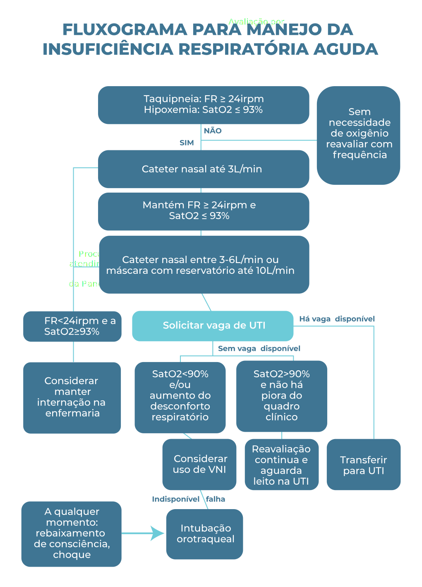

<!DOCTYPE html>
<html lang="pt-br">
<head>
  <!-- Global site tag (gtag.js) - Google Analytics -->
  <script async src="https://www.googletagmanager.com/gtag/js?id=UA-84826737-6"></script>
  <script>
    window.dataLayer = window.dataLayer || [];
    function gtag(){dataLayer.push(arguments);}
    gtag('js', new Date());

    gtag('config', 'UA-84826737-6');
  </script>

  <meta charset="utf-8">
  <title>Módulo 3 | Aula 2 - Manejo clínico inicial dos pacientes com síndrome respiratória aguda grave</title>
  <meta content="index, follow" name="robots">
  <meta content="width=device-width, initial-scale=1.0" name="viewport">
  <meta content="Ciência, Fiocruz, Curso, Ciência Aberta" name="keywords">
  <meta content="Módulo 3 | Manejo clínico: Casos graves; Aula 2: Manejo clínico inicial dos pacientes com síndrome respiratória aguda grave" name="description">

  <!--Font Awesome-->
  <script src="https://kit.fontawesome.com/8bfaea11f7.js" crossorigin="anonymous"></script>

  <!-- Favicons -->
  <link href="https://portal.fiocruz.br/sites/portal.fiocruz.br/themes/portalnovo/images/favicon.ico" rel="icon">
  <link href="https://portal.fiocruz.br/sites/portal.fiocruz.br/themes/portalnovo/images/indice.jpg" rel="apple-touch-icon">

  <!-- Google Fonts -->
  <link href="https://fonts.googleapis.com/css?family=Montserrat:200,200i,300,300i,400,400i,500,500i,600,600i,700,700i,800,800i,900,900i|Playfair+Display:400,400i,700,700i,900,900i" rel="stylesheet">

  <!-- Bootstrap CSS --> 
  <link href="../lib/bootstrap/css/bootstrap.min.css" rel="stylesheet">

  <!-- Biblioteca CSS -->
  <link href="../lib/animate/animate.min.css" rel="stylesheet">
  <link href="https://unpkg.com/ionicons@4.4.2/dist/css/ionicons.min.css" rel="stylesheet"><!--Ionicons-->
   <link href="../lib/aos/aos.css" rel="stylesheet">
  <link href="../lib/magnific-popup/magnific-popup.css" rel="stylesheet">
  <link href="../lib/quiz/modulo1/aula1/quiz.css" rel="stylesheet">

  <!-- CSS geral das aulas e recursos visuais -->
  <link rel="stylesheet" href="../css/style.css">
  <link rel="stylesheet" href="../css/style-visual-resources.css">

  <!-- JS de Includes-->
  <script src="../js/include.js"></script>

  <!-- JS das Atividades (H5p) -->
  <script src="https://h5p.org/sites/all/modules/h5p/library/js/h5p-resizer.js" charset="UTF-8"></script>

</head>

<body id="acessibilidade">

  <!--==========================
    Header
  ============================-->
  <header id="header">
    <div class="container">

      <div id="logo" class="pull-left">
        <a href="https://campusvirtual.fiocruz.br/" class="scrollto"> </a>
      </div>

     <!-- Menu de Navegação -->
      <nav id="nav-menu-container">
        <ul class="nav-menu sf-js-enabled sf-arrows" id="menu-curso1" style="touch-action: pan-y;">
          <li><a href="#" data-toggle="modal" data-target="#modal-apresentacao">Apresentação do curso</a></li>
          <li class="menu-has-children"><a href="" class="sf-with-ul">Módulos</a>
            <ul style="display: none;">
              <li class="menu-has-children"><a href="#" class="sf-with-ul">Módulo 1</a>
                <ul style="display: none;">
                  <li>
                    <h5>Introdução ao novo coronavírus</h5>
                  </li>
                  <li><span class="section-divider"></span></li>
                  <li><a href="../modulo1/aula1.html">Aula 1: Novo coronavírus: Conceitos básicos</a></li>
                  <li><a href="../modulo1/aula2.html">Aula 2: Transmissão, sintomas e prevenção</a></li>
                  <li><a href="../modulo1/aula3.html">Aula 3: O que fazer se você estiver doente</a></li>
                </ul>
              </li>

              <li class="menu-has-children"><a href="#" class="sf-with-ul">Módulo 2</a>
                <ul style="display: none;">
                  <li>
                    <h5>Manejo Clínico</h5>
                  </li>
                  <li><span class="section-divider"></span></li>
                  <li><a href="../modulo2/aula1.html">Aula 1: Organizando sua UBS para a Pandemia</a></li>
                  <li><a href="../modulo2/aula2.html">Aula 2: Manejo Clínico da COVID-19</a></li>
                  <li><a href="../modulo2/aula3.html">Aula 3: Como conduzir isolamento domiciliar</a></li>
                  <li><a href="../modulo2/aula4.html">Aula 4: Protegendo os profissionais de saúde</a></li>
                </ul>
              </li>

              <li class="menu-has-children"><a href="#" class="sf-with-ul">Módulo 3</a>
                <ul style="display: none;">
                  <li>
                    <h5>Manejo clínico: atenção especializada</h5>
                  </li>
                  <li><span class="section-divider"></span></li>
                  <li><a href="../modulo3/aula1.html">Aula 1: Detecção precoce e classificação da severidade dos pacientes com
                      síndrome respiratória aguda grave (SRAG)</a></li>
                  <li><a href="../modulo3/aula2.html">Aula 2: Manejo clínico inicial dos pacientes com síndrome respiratória aguda
                      grave</a></li>
                  <li><a href="../modulo3/aula3.html">Aula 3: Investigação de imagem, laboratorial e diagnóstico diferencial da
                      COVID-19</a></li>
                  <li><a href="../modulo3/aula4.html">Aula 4: Suporte farmacológico a pacientes com COVID-19</a></li>
                  <li><a href="../modulo3/aula5.html">Aula 5: Suporte respiratório a pacientes com COVID-19</a></li>
                  <li><a href="../modulo3/aula6.html">Aula 6: Manejo Clínico da gestante no contexto da COVID-19</a></li>
                  <li><a href="../modulo3/aula7.html">Aula 7: Procedimentos de proteção e controle de infecção em ambiente
                      hospitalar</a></li>
                </ul>
              </li>
            </ul>
          </li>

          <li><a href="#" data-toggle="modal" data-target="#modal-bibliografia">Bibliografia</a></li>
          <li><a href="#" data-toggle="modal" data-target="#modal-creditos">Créditos</a></li>
          <li><a href="#" data-toggle="modal" data-target="#modal-material-complementar">Material Complementar</a></li>
          <li><a class="cta-btn" href="../faq.html" target="_blank">FAQ</a></li>
          
        </ul>
      </nav>
      <!-- Fim do Menu de Navegação -->

    </div>


    <!--Breadcrumb-->
    <div id="breadcrumb" class="d-none serie3">
      <div class="container">
        <div class="row" data-aos="flip-right">
          <div class="col-12">
            <ul class="nav-menu">
              <li><a href='aula2.html' target='_blank'><i class="fas fa-home"></i> Módulo 3</a> > <a href='aula2.html' target='_blank'>Aula 2</a></li>
              <li class="float-right">            
                <div id="font-setting-buttons">
                  <div class="btn-group">
                    <a class="btn btn-outline-secondary decrease-me"><i class="fas fa-font"></i></a>
                    <a class="btn btn-outline-secondary reset-me"><i class="fas fa-font"></i></a>
                    <a class="btn btn-outline-secondary increase-me"><i class="fas fa-font"></i></a>
                  </div>
                </div>
              </li>
            </ul>
          </div>
        </div>
    </div>
  </div>
  <!--Fim do Breadcrumb-->  

  </header><!-- #header -->


  <main id="main">

    <!--==========================
      Intro Section
    ============================-->
    <section id="intro" class="triangle" data-aos="fade-in" data-aos-easing="ease-out-back" data-aos-duration="1000" data-aos-delay="0">
      <div class="intro-text">
        <p class="headline-small serie3" data-aos="fade-up" data-aos-duration="400" data-aos-delay="400">Módulo 3 | Manejo clínico: atenção especializada</p>
        <h1 data-aos="fade-in" data-aos-duration="850" data-aos-delay="600">COVID-19<br><span>Manejo da infecção causada  pelo novo coronavírus</span></h1>
        
      </div>
    </section><!-- #intro --> 

    <!--==========================
      Bloco 1  - Aula 2
    ============================-->
    <section id="bloco1" class="pb-5 pt-5" data-aos="fade-in" data-aos-easing="ease-out-back" data-aos-duration="1000" data-aos-delay="1000">
      <div class="container">
        <div class="section-header">
          <p class="headline-small text-center">Aula 2</p>
          <h2 class="section-title">Manejo clínico inicial dos pacientes com síndrome respiratória aguda grave</h2>
          <span class="section-divider middle"></span>
        </div>

        <div class="row justify-content-center">
          <div class="col-12 col-lg-8">
            <p>Esta é a Aula 2 do Módulo 3 do curso COVID-19 Fiocruz.</p>
            <p>Nesta aula, vamos compartilhar o conhecimento científico atual no manejo clínico de pacientes que evoluíram com gravidade do quadro geral.</p>
            <p>Ao final, você será capaz de:</p>
            <ul>
              <li>Rever os sinais e sintomas indicativos de evolução com gravidade de um paciente com a COVID-19;</li>
              <li>Aplicar os protocolos já divulgados no manejo dos pacientes graves da COVID-19.</li>
            </ul>
            <p>Os materiais básicos de referência são:</p>
             <ul>
              <li><a href="https://portalarquivos.saude.gov.br/images/pdf/2020/April/14/Protocolo-de-Manejo-Cl--nico-para-o-Covid-19.pdf" target="_blank">Protocolo de Manejo Clínico da COVID-19 na Atenção Especializada</a> e <a href="https://docs.bvsalud.org/biblioref/2020/05/1095920/20200504-protocolomanejo-ver09.pdf" target="_blank">Protocolo de Manejo Clínico do coronavírus na Atenção Primária à Saúde (versão 7), preconizados pelo Ministério da Saúde;</a></li>
              <li><a href="https://portalarquivos.saude.gov.br/images/pdf/2020/April/13/Diretrizes-COVID-13-4.pdf" target="_blank">Diretrizes para Diagnóstico e Tratamento da COVID-19 da Secretaria de Ciência, Tecnologia, Inovação e Insumos Estratégicos em Saúde (SCTIE)</a>; e</li>

              <li><a href='https://www.arca.fiocruz.br/bitstream/icict/40741/4/PLANO_CONTING_CORONAVIRUS_VERSAO%2011_21_05_2020_ATUALIZADO.pdf' target='_blank'>Plano de Ação para Manejo de Casos de Infecção pelo novo coronavírus (SARS-cov2)</a>, do Instituto Nacional de Infectologia Evandro Chagas, da Fundação Oswaldo Cruz (INI/FIOCRUZ).</li>
            </ul>
          </div>
        </div>

      </div>
    </section><!--fim do bloco1-->

    <!--==========================
      Capa - Capítulos
    ============================-->
    <section  class="capa-capitulos">
      <div class="container">
        <div class="row justify-content-center">
          <div class="col-12 text-center">
            <h1 class="cta-title" data-aos="zoom-in-down" data-aos-easing="ease-out-back">Sinais e sintomas indicativos de evolução com gravidade de casos da COVID-19</h1>
          </div>
         </div>
      </div>
    </section>
    <!-- #call-to-action -->

    <!--==========================
      Bloco 2 - Sinais e sintomas
    ============================-->
    <section id="bloco2" class="pb-5 pt-5">
        <div class="container">
          <div class="row justify-content-center">
           <div class="col-12 col-lg-8">
            <p>É muito importante que os profissionais de saúde que lidam com pacientes com a COVID-19 estejam atentos aos sinais indicativos de evolução com gravidade da doença e sinais de deterioração clínica, como febre persistente e queixa ou sinais clínicos de dispneia.</p>
            <p><strong>A Síndrome Gripal</strong> é caracterizada por febre de início súbito, mesmo que referida, acompanhada de tosse, dor de garganta ou dificuldade respiratória, na ausência de outro diagnóstico específico.</p>
            <p>Em <strong>crianças menores que 2 anos de idade:</strong> febre de início súbito, mesmo que referida, e sintomas respiratórios, como tosse, coriza e obstrução nasal, na ausência de outro diagnóstico específico.</p>
            <p>O quadro resume os principais sintomas e sinais de gravidade em adultos e crianças.</p>

            <!--Início tabela horizontal-->
            <div class="row mt-3 mb-5">
              <div class="col-12">
                <div class="table-responsive serie3" data-aos="fade-up">
                  <table class="table table-bordered section-bg">
                    <thead>
                      <tr>
                        <th class="text-center" colspan="2">SINAIS E SINTOMAS DE GRAVIDADE</th>
                      </tr>
                    </thead>
                    <thead>
                      <tr>
                        <th class="text-center">ADULTOS</th>
                        <th class="text-center">CRIANÇAS</th>
                      </tr>
                    </thead>

                    <tr>
                        <td class="text-left" width=50%>

                          <p><b>Déficit no sistema respiratório:</b></p>

                          <ul>
                              <li>Falta de ar ou dificuldade para respirar; ou</li>
                              <li>Ronco, retração sub/intercostal severa; ou</li>
                              <li>Cianose central; ou</li>
                              <li>Saturação de oximetria de pulso <95% em ar ambiente; ou</li>
                              <li>Taquipneia (>30 mpm);</li>
                          </ul>

                            <p><b>Déficit no sistema cardiovascular:</b></p>

                            <ul>
                              <li>Sinais e sintomas de hipotensão (hipotensão arterial com sistólica abaixo de 90 mmHg e/ou diastólica abaixo de 60mmHg); ou</li>
                              <li>Diminuição do pulso periférico.</li>
                            </ul>

                            <p><b>Sinais e sintomas de alerta adicionais:</b></p>

                              <ul>
                              <li>Piora nas condições clínicas de doenças de base;</li>
                              <li>Alteração do estado mental, como confusão e letargia;</li>
                              <li>Persistência ou aumento da febre por maisde 3 dias ou retorno após 48 horas de período afebril.</li>
                            </ul>
                          </td>
                          <td class="text-left">

                          <p><b>Déficit no sistema respiratório:</b></p>

                            <ul>
                              <li>Falta de ar ou dificuldade para respirar;</li>
                              <li>Ronco, retração sub/intercostal severa;</li>
                              <li>Cianose central;</li>
                              <li>Batimento da asa de nariz;</li>
                              <li>Movimento paradoxal do abdome;</li>
                              <li>Bradipneia e ritmo respiratório irregular;</li>
                              <li>Saturação de oximetria de pulso <95% em ar ambiente;</li>
                              <li>Taquipneia</li>
                              <li>Déficit no sistema cardiovascular:</li>
                              <li>Sinais e sintomas de hipotensão ou;</li>
                              <li>Diminuição do pulso periférico.</li>
                            </ul>

                              <p><b>Sinais e Sintomas de alerta adicionais:</b></p>

                            <ul>
                              <li>Inapetência para amamentação ou ingestão de líquidos;</li>
                              <li>Piora nas condições clínicas de doenças de base;</li>
                              <li>Alteração do estado mental</li>
                              <li>Confusão e letargia;</li>
                              <li>Convulsão.</li>
                            </ul>  

                          </td>
                      </tr>
                    
                    </tbody>
                  </table>
                </div>
              </div>
            </div><!--fim da row-->
            <!--Fim da Tabela horizontal-->

            <p>É também importante registrar a frequência cardíaca e respiratória de todos os pacientes. Isso é ainda mais importante no caso de crianças e outras pessoas que podem não apresentar febre.  Os parâmetros normais cardíaca e respiratória por faixa etária são apresentados no  Quadro. </p>

             <h6>Frequência respiratória normal de acordo com as faixas etárias </h6>
            <!--Início tabela horizontal-->
            <div class="row mt-3 mb-5">
              <div class="col-12">
                <div class="table-responsive serie3" data-aos="fade-up">
                  <table class="table table-bordered section-bg">
                    <thead>
                      <tr>
                        <th class="text-center">IDADE</th>
                        <th class="text-center">FREQUÊNCIA</th>
                      </tr>
                    </thead>
                    <tbody>
                      <tr class="text-center">
                        <td class="text-center" width="50%">1 a 12 meses</td>
                        <td class="text-center">30 a 53</td>
                      </tr>
                        <tr class="text-center">
                        <td class="text-center">1 a 2 anos</td>
                        <td class="text-center">22 a 37</td>
                      </tr>
                        <tr class="text-center">
                        <td class="text-center">3 a 5 anos</td>
                        <td class="text-center">20 a 28</td>
                      </tr>
                        <tr class="text-center">
                        <td class="text-center">Escolar </td>
                        <td class="text-center">18 a 25</td>
                      </tr>
                        <tr class="text-center">
                        <td class="text-center">Adolescente</td>
                        <td class="text-center"> 12 a 20</td>
                      </tr>   
                    </tbody>
                  </table>
                  <p class="source" style="margin-bottom:0px; background-color: #f0f5f5!important;"><br>
                    <b>Ref:</b> Protocolo influenza 2017<br>
                      <b>Fonte:</b> American Heart Association, 2015</p>
                </div>
              </div>
            </div><!--fim da row-->
            <!--Fim da Tabela horizontal-->
            
            <h6>Frequência cardíaca normal de acordo com as faixas etárias </h6>

            <!--Início tabela horizontal-->
            <div class="row mt-3 mb-5">
                        <div class="col-12">
                          <div class="table-responsive serie3" data-aos="fade-up">
                            <table class="table table-bordered section-bg">
                              <thead>
                                <tr>
                                  <th class="text-center">IDADE</th>
                                  <th class="text-center">FREQUÊNCIA EM VIGÍLIA</th>
                                  <th class="text-center">FREQUÊNCIA EM SONO</th>
                                </tr>
                              </thead>
                              <tbody>
                                <tr class="text-center">
                                  <td class="text-center" width="30%">Recém-nascido</td>
                                  <td class="text-center" width="35%">100 a 205</td>
                                  <td class="text-center" width="35%">90 a 160</td>
                                </tr>
                                 <tr class="text-center">
                                  <td class="text-center">1 a 12 meses</td>
                                  <td class="text-center">100 a 180</td>
                                  <td class="text-center">90 a 160</td>
                                </tr>
                                 <tr class="text-center">
                                  <td class="text-center">1 a 2 anos</td>
                                  <td class="text-center">98 a 140</td>
                                  <td class="text-center">80 a 120</td>
                                </tr>
                                 <tr class="text-center">
                                  <td class="text-center">3 a 5 anos</td>
                                  <td class="text-center">80 a 120 65</td>
                                  <td class="text-center">120 65 a 100</td>
                                </tr>
                                 <tr class="text-center">
                                  <td class="text-center">Escolar</td>
                                  <td class="text-center">75 a 118</td>
                                  <td class="text-center">58 a 90</td>
                                </tr>   
                              </tbody>
                            </table>
                            <p class="source" style="margin-bottom:0px; background-color: #f0f5f5!important;"><br>
                              <b>Ref:</b> Protocolo influenza 2017<br>
                               <b>Fonte:</b> American Heart Association, 2015</p>
                          </div>
                        </div>        
             </div><!--fim da row-->
            <!--Fim da Tabela horizontal-->

            <h6>Febre persistente como marcador de gravidade </h6> 
            <p>Dra. Claudia Costa, pneumologista, professora coordenadora da disciplina de pneumologia da UERJ e responsável pela instalação da área de pré-atendimento hospitalar na Universidade, fala sobre orientações e procedimentos em caso de febre persistente.</p>

            <!--Vídeo-->
            <div class="embed-responsive embed-responsive-16by9 mt-3 mb-5">
              <iframe src="https://educare.fiocruz.br/file-storage/Kid2CDZT#t=0.6" width="500" height="300" frameborder="0" allowfullscreen="allowfullscreen"></iframe>
            </div>
            <!--p class="reference-title text-center mt-3"></p-->
            <!--Fim de vídeo-->

              <p>A Sociedade Brasileira de Pneumologia e Tisiologia promoveu uma série de debates sobre atendimentos e procedimentos médicos no contexto da COVID. Você pode assistir o debate completo <a href="https://youtu.be/RxvnZ0OqBNc?t=4642" target="_blank">aqui</a></p>

            </div>
          </div>
          <!-- Fim da row -->
        </div>
        <!-- Fim do container -->
    </section><!--fim do bloco2-->

    <!--==========================
      Capa - Capítulos
    ============================-->
    <section  class="capa-capitulos">
      <div class="container">
        <div class="row justify-content-center">
          <div class="col-12 text-center">
            <h1 class="cta-title" data-aos="zoom-in-down" data-aos-easing="ease-out-back">Manejo clínico de casos graves</h1>
          </div>
         </div>
      </div>
    </section>
    <!-- #call-to-action -->

    <!--==========================
      Bloco 3  - Manejo clínico de casos graves 
    ============================-->
    <section id="bloco3" class="pb-5 pt-5">
      <div class="container">
        <div class="row justify-content-center">
          <div class="col-12 col-lg-8">
            <p> O paciente que apresentar indícios de evolução com gravidade do caso deverá ser avaliado imediatamente em ambiente hospitalar, devendo ter seus sinais vitais básicos monitorados com maior frequência, principalmente aqueles relacionados ao aparelho respiratório. Ao se deparar com um caso grave, é preciso iniciar o manejo clínico do paciente e solicitar uma série de exames complementares (<a href="../modulo3/aula3.html" target="_blank">Aula 3 - Investigação de imagem, laboratorial e diagnóstico diferencial da COVID-19</a>).</p>
            <p>O paciente deve estar acamado e monitorado quanto aos sinais vitais: frequências cardíaca e respiratória, saturação de oxigênio e pressão arterial.</p>
            <p>Outras ações são:</p>
            <ul>
              <li>Tratamento sintomático, como, por exemplo, caso o paciente tenha dor ou febre, utilizar dipirona ou paracetamol.</li>
              <li>Administrar medicamentos para reduzir a incidência de úlceras de estresse e sangramento intestinal (bloqueadores de histamina ou inibidores de bomba de prótons). Exemplo: Omeprazol 20 mg 1x/dia.</li>
              <li>Avaliar a necessidade de profilaxia de tromboembolismo venoso, sempre que não houver contraindicação.</li>
              <li>Para pacientes com leve desconforto respiratório, é recomendado o uso de cateter nasal de oxigênio com 2L/min.</li>
            </ul>
            <p>Nos pacientes com infecções respiratórias graves, dificuldade respiratória ou hipoxemia e com SatO<sub>2</sub> < 92%, iniciar <strong>oxigenoterapia</strong> suplementar com fluxo inicial de 3-6L/min para alcançar uma saturação > 93%. Utilizar máscara facial com bolsa reservatório (10-15L/min) se o paciente estiver em estado crítico. Em crianças com sinais de gravidade (dispneia obstrutiva, apneia, dificuldade respiratória grave, cianose central, choque, coma ou convulsões) o alvo é manter uma SatO<sub>2</sub> >=94%.</p>

            <div class="box-quote mb-5" style="padding:30px;">
              <div class="table-responsive" style="background:none;" data-aos="fade-up">
                <h4 style="color: var(--azul);">Saturação alvo de oxigênio após estabilização do paciente </h4>
                <table class="table table-bordered mt-3 mb-4">
                  <tr>
                    <td width="50%"><strong>Adultos</strong></td>
                    <td><strong>Crianças</strong></td>
                  </tr>
                  <tr>
                    <td width="50%" style="vertical-align: top;"><p>SatO<sub>2</sub> ≥ 90% em pacientes não grávidas, SatO<sub>2</sub> ≥ 92-95% em pacientes grávidas; </p></td>
                    <td style="vertical-align: top;"><p> SatO<sub>2</sub> ≥ 90%.</p></td>
                  </tr>
                </table>
              </div>
              
              <p><strong>ATENÇÃO:</strong></p>
              <ul>
                <li>Evitar o uso de oxigênio umidificado para reduzir o risco de aerossolização e propagação viral.</li>
                <li>Cânulas nasais de alto fluxo de oxigênio devem ser limitadas a pacientes em isolamento respiratório apropriado por conta do risco de aerossolização e propagação viral.</li>
                <li>Evitar nebulização de medicamentos fora de áreas de isolamento respiratório devido ao risco de aerossolização e propagação viral.</li>
              </ul>
            </div>

            <p>Quando não houver evidência de choque, optar por tratamento conservador de reposição volêmica em pacientes com síndrome respiratória aguda grave (SRAG). A reposição agressiva pode piorar a oxigenação.</p>

            
            <p class="text-center"><a href="../img/modulo3/aula3/fluxograma_01.png" target="_blank">Download do fluxograma - 61Kb</a></p>

            <p>Após mais de um ano de pandemia, até junho de 2021, ainda não havia tratamento farmacológico específico para COVID-19. Nesse contexto, o tratamento farmacológico de pacientes com SRAG se relaciona principalmente ao manejo dos sintomas, de condições associadas (p.ex, pneumonia bacteriana, doenças crônicas), ou à suspeita ou presença de outras causas de insuficiência respiratória (p.ex, influenza).</p>

            <p>Para pacientes com comorbidades, é importante determinar quais terapias devem ser continuadas e quais podem ser temporariamente suspensas.</p>

            <p>Uma questão relevante é fazer o diagnóstico diferencial com influenza, que tem tratamento específico eficaz. Caso haja confirmação ou suspeita de influenza, recomenda-se: </p>
              
            <ul> 
               <li>Administrar Oseltamivir (75mg de 12/12h por 5 dias) para pacientes com diagnóstico de influenza ou em risco de desenvolver doença grave que possa ser causada por influenza. Suspender caso diagnóstico de influenza seja descartado por exame laboratorial. Veja, no quadro, as Condições de Risco para Complicações que indicam uso de Oseltamivir.</li>
            </ul>

            <!--Início tabela horizontal-->
            <div class="row mt-3 mt-5 mb-3">
                <div class="col-12">
                  <div class="table-responsive">
                    <table class="table table-bordered section-bg">
                      <thead>
                        <tr>
                          <th class="text-center">CONDIÇÕES DE RISCO PARA COMPLICAÇÕES<br>Recomendação do uso de Oseltamivir</th>
                        </tr>
                      </thead>
                      <tbody>
                        <tr>
                          <td width=50%>
                            <ul>
                            <li> Grávidas em qualquer idade gestacional, puérperas até duas semanas após o parto (incluindo as que tiveram aborto ou perda fetal).</li>

                              <li>Adultos ≥ 60 anos.</li>

                              <li>Crianças < 5 anos (sendo que o maior risco de hospitalização é em menores de 2 anos, especialmente as menores de 6 meses com maior taxa de mortalidade).</li>

                              <li>População indígena aldeada ou com dificuldade de acesso.</li>

                              <li>Indivíduos menores de 19 anos de idade em uso prolongado de ácido acetilsalicílico (risco de síndrome de Reye).</li>

                              <li>Indivíduos que apresentem:

                                <ul>

                              <li>Pneumopatias (incluindo asma).</li>
                              <li>Pacientes com tuberculose de todas as formas (há evidências de maior complicação e possibilidade de reativação).</li>
                              <li>Cardiovasculopatias (excluindo hipertensão arterial sistêmica).</li>
                              <li>Nefropatias.</li>
                              <li>Hepatopatias.</li>
                              <li>Doenças hematológicas (incluindo anemia falciforme).</li>
                              <li>Distúrbios metabólicos (incluindo diabetes mellitus).</li>
                              <li>Transtornos neurológicos e do desenvolvimento que podem comprometer a função respiratória ou aumentar o risco de aspiração (disfunção cognitiva, lesão medular, epilepsia, paralisia cerebral, síndrome de Down, acidente vascular encefálico – AVE ou doenças neuromusculares).</li>
                              <li>Imunossupressão associada a medicamentos (corticoide ≥ 20 mg/dia por mais de duas semanas, quimioterápicos, inibidores de TNF-alfa) neoplasias, HIV/aids ou outros.</li>
                              <li>Obesidade (especialmente aqueles com índice de massa corporal – IMC ≥ 40 em adultos).</li>

                            </ul>

                              </li>
                            </ul>
                          
                          </td>
                        </tr>
                      
                      </tbody>
                    </table>
                  </div>
                </div><!--Fim da coluna-->
            </div><!--fim da row-->
            <!--Fim da Tabela horizontal-->
            <p class="source text-center mb-2"><b>Fonte:</b> Protocolo de Tratamento de Influenza. Ministério da Saúde 2017.</p>
            <p class="text-center"><a href="../img/modulo3/aula3/tabela_09.png" target="_blank">Download da tabela - 98Kb</a></p>

            <p>Para pacientes com insuficiência renal, recomenda-se correção na dose do medicamento já administrado e Oseltamivir. Confira no quadro:</p>

            <!--Início tabela horizontal-->
            <div class="row mt-3 mt-5 mb-2">
              <div class="col-12">
                <div class="table-responsive">
                  <table class="table table-bordered section-bg">
                    <thead>
                      <tr>
                        <th class="text-center" colspan="3">DOSE DE OSELTAMIVIR PARA PACIENTES COM INSUFICIÊNCIA RENAL</th>
                      </tr>
                    </thead>
                    <thead>
                      <tr>
                        <th class="text-center strong">CLEARANCE DE CREATININA</th>
                        <th class="text-center strong">TRATAMENTO 5 DIAS</th>
                        <th class="text-center strong">PROFILAXIA 10 DIAS</th>
                      </tr>
                    </thead>
                    <tbody>
                      <tr>
                        <td width="33,33%">
                          <b>Leve Clearance</b><br> &gt;60-90 ml/min<br><br>
                          <b>Moderado Clearance</b><br> &gt;30-60 ml/min<br><br>
                          <b>Severo Clearance</b><br> &gt;10-30 ml/min<br><br>
                          <b>Pacientes em hemodiálise Clearance</b><br> ≤ 10 ml/min<br><br>
                          <b>Pacientes em diálise Peritoneal Contínua ambulatorial – dPCaClearance</b><br> ≤ 10 ml/min<br><br>
                        </td>
                        <td width="33,33%">
                          75 mg 12/12 h<br><br>
                          30 mg 12/12 h<br><br>
                          30 mg 1 vez ao dia<br><br>
                          30 mg após cada sessão de hemodiálise*<br><br>
                          Única dose de 30 mg administrada imediatamente após troca da diálise
                        </td>
                        <td width="33,33%">30 mg 1 vez por semana imediatamente após troca da diálise**</td>
                      </tr>

                      <tr>
                        <td colspan="3">

                          <p> *Serão apenas três doses (em vez de cinco) após cada sessão de hemodiálise, considerando-se que, num período de cinco dias, serão realizadas três sessões.</p>

                          <p>**Serão duas doses de 30 mg cada, considerando-se os dez dias, em que ocorrerão apenas duas sessões de diálise.</p>
                          </td>
                      </tr>
                    
                    </tbody>
                  </table>
                </div>
              </div><!--Fim da coluna-->
            </div><!--fim da row-->
            <!--Fim da Tabela horizontal-->
            <p class="source mb-2"><b>Fonte:</b> CDC adaptado (2011; [2017])</p>
            <p class="text-center"><a href="../img/modulo3/aula3/tabela_10.png" target="_blank">Download da tabela - 58kb</a></p>

            <p>Caso haja confirmação ou suspeita de infecção bacteriana associada:</p>

            <ul> 
              <li>Administrar antimicrobianos empíricos para tratar os patógenos prováveis que causam SRAG de acordo com a possível origem da infecção (comunitária ou nosocomial) e com dados das Comissões de Infecção Hospitalar das unidades de saúde. Administre antimicrobianos dentro de uma hora da avaliação inicial de pacientes com sepse: </li>
            </ul>

            <div class="row justify-content-center">
              <div class="col-10 col-lg-8 mt-5 mb-5">
                <div class="box-quote text-center">
                  <h4 style="color:var(--azul2);">Amoxicilina<br><strong style="color:var(--azul);">+</strong>Clavulanato 1g EV 8/8h<br><strong style="color:var(--azul);">e</strong> <br> Azitromicina 500 mg</h4>
                  <span style="color:var(--azul2);">(preferencialmente VO)</span>
                </div>
              </div>
            </div>

            <p>O tratamento empírico com antibióticos deve ser indicado somente quando houver suspeita de coinfecção bacteriana. Deve ser baseado no diagnóstico clínico (pneumonia adquirida na comunidade, pneumonia hospitalar, associada à ventilação mecânica ou sepse), epidemiologia local e dados de suscetibilidade.</p>

            <p>Foi publicado em fevereiro de 2021, um estudo clínico com quase 8 mil pacientes diagnosticados com COVID-19, utilizando método comparativo entre dois grupos populacionais. Esse estudo evidenciou que em pacientes internados com COVID-19, o uso da Azitromicina não diminuiu a mortalidade nem o período de internação. Dessa forma, o seu uso clínico deve ficar restrito à presença de pneumonias bacterianas secundárias cujos microrganismos sejam sensíveis a este tipo de antibiótico.</p>

            <p>Não se recomenda tratamento ou profilaxia com antibióticos para pacientes com quadro leve de COVID-19. O uso generalizado de antibióticos deve ser desencorajado, pois pode levar a taxas de resistência bacteriana mais altas, o que impacta na morbidade e nos óbitos durante e depois da pandemia. </p>

            <p>O uso de corticosteróides sistêmicos em casos de COVID-19 deve ser cuidadosamente analisado. As evidências científicas ainda são limitadas, as recomendações são feitas de acordo com a gravidade da doença e devem ser consideradas caso a caso. Instituições como NIH, CDC, OMS e IDSA emitiram diretrizes para o uso de dexametasona em pacientes com COVID-19 com base em dados atualmente disponíveis, a partir da gravidade da doença (na falta de dexametasona, avaliar a substituição por prednisona ou hidrocortisona ou metilprednisolona). As recomendações atuais preconizam que pacientes com quadro leve e moderado não devam ser inicialmente tratados com o corticosteróide, pois esses medicamentos podem inibir a resposta imune e reduzir a eliminação do patógeno. Porém, caso haja piora das condições clínicas, com sinais de insuficiência respiratória e/ou necessidade de uso de oxigenioterapia, recomenda-se iniciar o uso do corticosteróide sistêmico para o tratamento. </p>

            <p>Recomenda-se que pacientes que apresentem a forma crítica ou severa da COVID-19 não façam uso rotineiro de corticosteróides sistêmicos. Deve ser avaliado o uso da dexametasona em baixa dosagem e curta duração, principalmente quando o quadro estiver associado à Síndrome do Desconforto Respiratório. Se a terapia com corticosteróides for prescrita, é necessário monitorar e tratar os potenciais efeitos adversos, como hiperglicemia, hiponatremia e hipocalemia. Esta recomendação de tratamento é ainda menos evidente, até o momento, para populações menos representadas em ensaios clínicos recentes, como crianças, gestantes e puérperas, pacientes com tuberculose e indivíduos imunocomprometidos. Os possíveis riscos e benefícios da terapia com corticosteróides sistêmicos devem ser analisados caso a caso. </p>

            <!--Saiba Mais-->
            <div class="row justify-content-center mb-5 mt-5 mx-auto">
              <div class="saiba-mais col-10 col-lg-12 aos-init aos-animate" data-aos="fade-up" data-aos-duration="400" data-aos-delay="400">
                <div class="box-quote multi-border">
                  <h5><i class="fas fa-question-circle" data-fa-transform="grow-25"></i>Saiba mais:</h5>
                  <div class="saiba-mais-content">
                    <p>As diretrizes da OMS recomendam não interromper o tratamento com corticosteroides sistêmicos em pacientes que já fazem uso desses medicamentos devido a condições crônicas como DPOC e doenças autoimunes e que apresentem quadro leve e moderado de COVID-19. </p>
                    
                    <p>O manejo da COVID-19 tem sido amplamente estudado, é importante que os profissionais de saúde mantenham-se atualizados sempre que novos resultados de estudos clínicos são disponibilizados ou as diretrizes clínicas de organizações médicas e científicas renomadas são atualizadas.</p>

                    <p class="h3 mt-5"><strong>Referência sobre uso de corticosteróides:</strong> </p>

                    <ul class="my-3">
                      <li><a href='https://www.who.int/publications-detail/clinical-management-of-severe-acute-respiratory-infection-when-novel-coronavirus-(ncov)-infection-is-suspected' target='_blank'>World Health Organization. Clinical management of COVID-19. Interim guidance. </a></li>

                      <li>Alhazzani W, Møller MH, Arabi YM et al. Surviving sepsis campaign: Guidelines on the management of critically ill adults with coronavirus disease 2019 (COVID-19). Crit Care Med. 2020; Mar 27. doi: 10.1097/CCM.0000000000004363. PMID: 32224769</li>

                      <li><a href='https://www.covid19treatmentguidelines.nih.gov/immune-based-therapy/immunomodulators/corticosteroids/' target='_blank'>National Institutes of Health. COVID-19 treatment guidelines. </a></li>

                      <li><a href='https://www.idsociety.org/practice-guideline/covid-19-guideline-treatment-and-management/' target='_blank'>Infectious Diseases Society of America. IDSA guidelines on the treatment and management of patients with COVID-19</a></li>

                      <li>Stauffer WM, Alpern JD, Walker PF. COVID-19 and dexamethasone: A potential strategy to avoid steroid-related Strongyloides hyperinfection. JAMA. [published online ahead of print 2020 Jul 30]. PMID: 32761166. DOI: 10.1001/jama.2020.13170 </li>

                      <li>Tomazini BM, Maia IS, Cavalcanti AB et al. Effect of dexamethasone on days alive and ventilator-free in patients with moderate or severe acute respiratory distress syndrome and COVID-19: The CoDEX randomized clinical trial. JAMA. [published online ahead of print 2020 Sep 2]. PMID: 32876695. DOI: 10.1001/jama.2020.17021</li>

                      <li><a href='https://www.who.int/publications/i/item/WHO-2019-nCoV-Corticosteroids -2020.1' target='_blank'>World Health Organization. Corticosteroids for COVID-19. 2020</a></li>

                      <li><a href='https://www.thelancet.com/action/showPdf?pii=S0140-6736%2821%2900149-5' target='_blank'>RECOVERY Collaborative Group. Azithromycin in patients admitted to hospital with COVID-19 (RECOVERY): a randomised, controlled, open-label, platform trial. Lancet v. 397, n. 10274, p. 605–612, Fev. 2021. Doi: 10.1016/ S0140-6736(21)00149-5. </a></li>

                    </ul>
                  </div>
                </div>
              </div>
            </div>

            <!--Fim do Saiba Mais-->

          </div><!--fim da coluna-->
        </div><!-- fim da row-->
      </div><!--fim do container-->
    </section><!--fim do bloco3-->

   <!--==========================
      Capa - Capítulos
    ============================-->
    <section  class="capa-capitulos">
      <div class="container">
        <div class="row justify-content-center">
          <div class="col-12 text-center">
            <h1 class="cta-title" data-aos="zoom-in-down" data-aos-easing="ease-out-back">Indicações de piora clínica e internação em Unidade de Terapia Intensiva </h1>
          </div>
         </div>
      </div>
    </section>
    <!-- #call-to-action -->

    <!--==========================

      Bloco 4 - Indicações de piora clínica e internação em Unidade de Terapia Intensiva 

    ============================-->
    <section id="bloco4" class="pb-5 pt-5">
      <div class="container">
        <div class="row justify-content-center">

          <div class="col-12 col-lg-8">
            <p> Em caso de piora clínica, é necessário encaminhamento para uma Unidade de Terapia Intensiva. </p>

            <!--Início tabela horizontal-->
            <div class="row mt-3 mb-2">
              <div class="col-12">
                <div class="table-responsive" data-aos="fade-up">
                  <table class="table table-bordered section-bg">
                    <thead>
                      <tr>
                        <th class="text-center">CRITÉRIOS PARA INTERNAÇÃO</th>
                        <th class="text-center">CRITÉRIOS PARA INTERNAÇÃO EM UTI</th>
                      </tr>
                    </thead>
                    <tbody>
                      <tr>
                        <td width=50%>
                          <p>qSOFA= 1</p>
                          <p> Saturação< 92% em ar ambiente.</p>
                          <p> Paciente com acometimento pulmonar extenso no exame de imagem </p>
                        </td>

                        <td>
                          <p>qSOFA ⋝ 2</p>
                          <p>qSOFA= 1 e sO<sub>2</sub> ⋜ 92%</p>
                          <p>Insuficiência respiratória aguda com necessidade de ventilação mecânica invasiva.</p>
                          <p>Necessidade de oxigênio suplementar acima de 2L/min para saturação acima de 92%.</p>
                          <p>Hipotensão arterial (PAM< 65 mmhg ou PAS< 90 mmhg).</p>
                          <p>Frequência respiratória acima de 30 irpm persistente.</p>
                          <p>Rebaixamento do nível de consciência.</p>
                        </td>
                      </tr>
                      <tr>
                        <td colspan="2">
                          <p>Critérios para calcular qSOFA:</p>
                          <ul>
                            <li>Frequência respiratória> 22 irpm (1 ponto)</li>
                            <li>Pressão arterial sistólica< 100 mmHg (1 ponto)</li>
                            <li>Alteração do nível de consciência (1 ponto)</li>
                          </ul>
                        </td>
                      </tr>
                    </tbody>
                  </table>
                </div>
              </div>
              <!--Fim da coluna-->
            </div>
            <!--fim da row-->
            <!--Fim da Tabela horizontal-->
            <p class="source text-center mb-2">Elaboração:</b> Hospital Alemão Oswaldo Cruz</p>
            <p class="text-center"><a href="../img/modulo3/aula3/tabela_internacao.png" target="_blank">Download da tabela - 44.2Kb</a></p>

            <h5>Critérios para intubação</h5>
            <p>A intubação endotraqueal é recomendada nas seguintes situações: </p>
            <ul>
              <li>quando, após oxigenação nasal de alto fluxo (HFNO) ou ventilação não invasiva por 2 horas, os seguintes sintomas persistem ou pioram:
                <ul>
                  <li>dificuldade respiratória, </li>
                  <li>frequência respiratória >30/min, </li>
                  <li>índice de oxigenação PaO<sub>2</sub>/FiO2 150 mmHg</li>
                </ul>
              </li>
            </ul>
            <p>A decisão de intubação deve ser considerada em avaliação pelo médico assistente. Mais informações sobre suporte respiratório estão na <a href="aula5.html" targe="_blank">Aula 5 deste Módulo</a>. </p>

          </div>
        </div>
        <!--fim da row-->
      </div>
      <!--fim do container-->
    </section>
    <!--fim do bloco4-->

  <!--==========================
      Capa - Capítulos
    ============================-->
    <section  class="capa-capitulos">
      <div class="container">
        <div class="row justify-content-center">
          <div class="col-12 text-center">
            <h1 class="cta-title" data-aos="zoom-in-down" data-aos-easing="ease-out-back">Chegamos ao fim da aula</h1>
          </div>
         </div>
      </div>
    </section>
    <!-- #call-to-action -->

  <!--==========================

      Bloco 5 - Conclusão

    ============================-->
    <section id="bloco5" class="pb-5 pt-5">
      <div class="container">
        <div class="row justify-content-center">
    
          <div class="col-12 col-lg-8">
            <p><strong>Você terminou a Aula 2 do Módulo 3 do curso COVID-19 - Manejo da infecção causada pelo novo coronavírus.</strong></p>
    
            <p>Nesta aula, você revisou os sinais e sintomas indicativos de evolução com gravidade de um paciente com a COVID-19 e as recomendações de alguns protocolos para manejo dos pacientes graves, inclusive de condições associadas a SRAG.</p>

            <p>Na próxima aula, vamos falar sobre investigação de imagem, laboratorial e diagnóstico diferencial da COVID-19 e considerações sobre suporte farmacológico.</p>

            <p>Siga em frente!</p>
          </div>
        </div>
        <!--fim da row-->
      </div><!--fim do container-->
    </section><!--fim do bloco5-->

 <!--==========================
      Capa - Capítulos
    ============================-->
    <section  class="capa-capitulos">
      <div class="container">
        <div class="row justify-content-center">
          <div class="col-12 text-center">
            <h1 class="cta-title" data-aos="zoom-in-down" data-aos-easing="ease-out-back">Atividade</h1>
          </div>
         </div>
      </div>
    </section><!-- #call-to-action -->

	<!--==========================

      Bloco 6 - Atividade

    ============================-->
	<section id="avaliacao" class="quizz-wrapper pb-5 pt-5">
		<div class="container">
			<div class="row justify-content-center">

				<div class="col-12 col-lg-8">
				
          <iframe src="https://educare.fiocruz.br/h5p-content/embed/?contentId=1596564876" width="1090" height="1025" frameborder="0" allowfullscreen="allowfullscreen"></iframe>
				</div>
			</div><!--fim da row-->

		</div><!--fim do container-->
	</section><!--fim do bloco6-->

  <!--==========================
    Bloco 7 - Navegação entre aulas
  ============================-->
  <section id="nav-class" >
    <div class="container">
      <div class="row">
          <div class="col-lg-6 cta-btn-previous text-center">
            <a class="cta-btn align-middle" href="aula1.html">Aula Anterior</a>
          </div>
          <div class="col-lg-6 cta-btn-next text-center">
            <a class="cta-btn align-middle" href="aula3.html">Próxima Aula</a>
        </div>
      </div>
  </div>
  </section><!--fim do bloco7-->
      
  <!--==========================
    Barra de logos
  ============================-->
  <!-- Include dos logos -->
  <div w3-include-html="../barra-de-logos-modulos.html"></div>

  <!--==========================
      Modais - Bibliografia, Créditos & Material Complementar
    ============================-->

    <!-- Include da Apresentação -->
    <div w3-include-html="../apresentacao.html"></div>

     <!-- Include da Bibliografia -->
    <div w3-include-html="../bibliografia-modulo3.html"></div>

    <!-- Include da Créditos -->
    <div w3-include-html="../creditos.html"></div>

    <!-- Include da Créditos -->
    <div w3-include-html="../material-complementar.html"></div>

  </main>

  <a href="#" class="back-to-top serie3"><i class="fa fa-chevron-up"></i></a>

  <!-- Biblioteca de JavaScripts-->
  <script src="../lib/jquery/jquery.min.js"></script>
  <script src="../lib/jquery/jquery-migrate.min.js"></script>
  <script src="../lib/bootstrap/js/bootstrap.bundle.min.js"></script>
  <script src="../lib/easing/easing.min.js"></script>
  <script src="../lib/aos/aos.js"></script>
  <script src="../lib/superfish/hoverIntent.js"></script>
  <script src="../lib/superfish/superfish.min.js"></script>
  <script src="../lib/magnific-popup/magnific-popup.min.js"></script>
  <script src="../lib/wow/wow.min.js"></script>
  <script src="../lib/quiz/modulo1/aula1/quiz.js"></script>

  <!--Ionicons-->
  <script src="https://unpkg.com/ionicons@4.4.2/dist/ionicons.js"></script>

  <!-- Javascripts-->
  <script src="../js/main.js"></script>
  <script src="../js/main-timeline.js"></script>

  <!--Acessibilidade-->
  <script src="../js/jquery-2.2.1.min.js"></script>
  <script src="../js/jquery.font-accessibility.min.js"></script>

  <script>
  $(function(){
    /* Botões de Acessibilidade */
    $('#font-setting-buttons').easyView({
      container: '#acessibilidade',
      increaseSelector: '.increase-me',
      decreaseSelector: '.decrease-me',
      normalSelector: '.reset-me',
      contrastSelector: '.change-me'
    });

  });
  </script>

  <script>
      includeHTML();
    </script>

</body>
</html>
